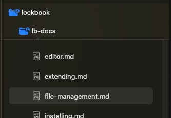
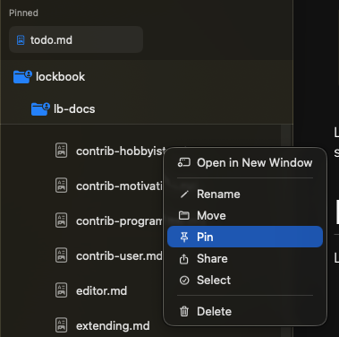
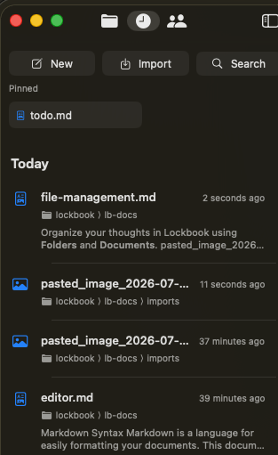
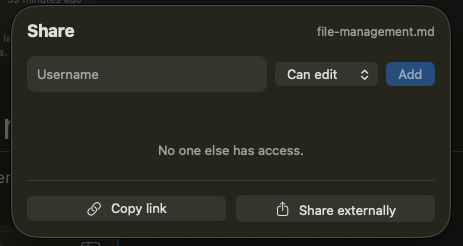
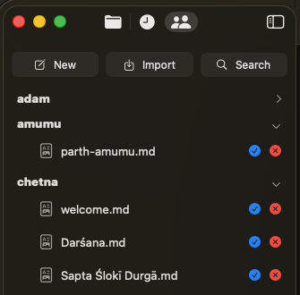
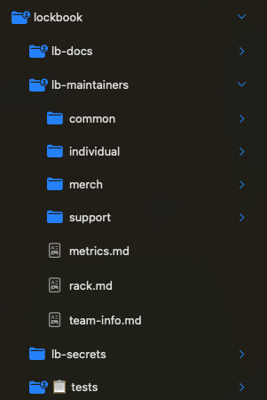

Welcome!
This is Lockbook’s documentation site. Lockbook is an open source note taking app. This website is dedicated to documenting our product for our users, as well as documenting how to contribute to Lockbook.
To get started here are some places of significance:
- Github is where you can find the source code for everything we work on.
- Github Issues is where you can see a list of all known defects, and be notified when they’re resolved. See Bug Reporting for more info.
- Discord is where all our team communication takes place.
Values
Understanding our values is the best way to learn our product deeply and form an intuition for decisions we’ve made or will make in the future.
Security
We build Lockbook to be secure and private. We use high security defaults, for example users generate a private key, rather than a password which can be guessed or re-used. This private key is the only thing which lets a user access their content. There is no way to recover a key, implying the user is the highest authority for access control, not Lockbook staff.
Privacy
Similarly, we end-to-end encrypt all possible data, making its content only accessible to the customer and the people they choose to collaborate with. This even applies to the names of files. The only data that Lockbook staff can access is the data that is technically required for the existence of our server.
Lockbook staff can access, for-instance: how many files you have, how large your documents are, and the overall structure of your file-tree.
Transparency
Many products claim they’re secure and private, fewer still will use strategies like end to end encryption to limit their own staff’s access, even fewer will open source all the code they write so you don’t have to trust that the product actually works the way it claims to.
We believe that real security and closed source implementations are contradictory ideas.
Apart from our source code, most of our communication also happens publicly, in a discord server that anyone can join. All of product planning, defect triage, and overall prioritization also happens in public through github issues.
Low time preference
We enjoy working on Lockbook and take our time to build it right. Having a native client for each platform, building editing experiences from the ground up are the types of things that indicate our long term view of building Lockbook.
Since 2020 our staff has been working out of pocket to bootstrap Lockbook with a sustainable business model (rather than going the traditional VC route). This decision, while difficult, we hope will pay dividends and allow us to build in accordance with the values specified in this document indefinitely.
Customer Centric
With most decisions we’re thinking about what the healthiest outcome is for our customers. We chose open formats for editing text (markdown) and drawings (svgs) because it’s in your best interest to be able to take the content you generate to any other platform in the future.
As a team we strongly believe in dog-fooding our product. Being customers ourselves is the best way to understand where our product is weak and requires further investments.
Installing Lockbook
For convenience, we try to make Lockbook as widely available as possible.
Being open source, you can always build Lockbook yourself.
Mobile
macOS
Linux
- Nix:
nix-shell -p lockbook-desktop - AUR:
yay -S lockbook-desktop - x86 Binary
- .deb
- Snap:
snap install lockbook-desktop - Flatpak:
flatpak install flathub net.lockbook.Lockbook
CLI
- Cargo:
cargo install lockbook - Nix:
nix-shell -p lockbook - AUR:
yay -S lockbook brew:brew tap lockbook/lockbook && brew install lockbook- Binaries for macOS, Windows & Linux
- Snap:
snap install lockbook
Windows
Organize your thoughts in Lockbook using Folders and Documents.

Lockbook doesn’t impose a lockbook-specific organizational scheme onto. Your content is yours, and Lockbook helps you to structure it in a way that is universally understood.
Documents
Lockbook supports an ever-growing list of file types.
- Tier 1 support: editable in platform
- Markdown, and many other forms of plain text: See more about our editor
- SVGs as our Drawing format
- Teir 2: viewable in platform
- many types of images
- PDFs (these will soon be convertible to SVGs for in platform editing)
- soon: audio then video
- Tier 3: storable
- anything smaller than 2gb
- soon: larger files
- soon: automatic virtual file system implementation for seamless editing of professional document types (photoshop, docx, etc)
- soon: automated file-system syncing strategies
All documents within Lockbook are encrypted and backed up to our server. Anything compressible is also compressed. You are charged for usage after any possible compression has been applied. Compression ratios of 3-10x are not uncommon.
In accordance with our values (privacy) almost everything a user inputs into our platform is encrypted and unreadable to us. This includes the names of files. See secret_filename.rs for implementation details.
On many platforms (soon: all) you can pin documents for fast navigation:

On many platforms (soon: all) you can access a “recents view” which let’s you quickly reference a file that was changed recently. On Apple, these selections are sticky, so if you’d prefer an apple notes style experience where you don’t really think about folders, you can do that.

Offline Access
Lockbook has made significant investment in supporting offline access. You can access, edit, and organize your files while you’re offline. Your client will store the changes you made and reconcile them with our server when you come back online. Textual and SVG content will be merged. Non-conflicting file operations will also be persisted. Some conflicting organization operations (two people renamed the same file) may be lost.
Ingress & Egress
We strive to support a multitude of ways to get data in and out of Lockbook. Here is a rough breakdown of what’s possible on each platform.
- Desktop
- drag files in & out
- right click import / export (or import button on macOS)
- paste images directly into documents
- soon: virtual file system support for seamless tier 3 files (see above)
- iOS (iPhone and iPad)
- paste images directly into documents
- from another app (like photos) share directly into Lockbook
- take a photo directly from a document
- soon: Files API support
- Android
- paste images directly into documents
- from another app (like photos) share directly into Lockbook
- CLI
- standard streams
- invoking native text editors
- copy from filesystem, or to filesystem
- experimental: virtual file system
Active areas of investment
- Version history is a highly requested area of ongoing investment. It involves an evolution to many of our core data structures and therefore must be done carefully. For more information see here: https://github.com/lockbook/lockbook/issues/190
Collaboration
You can share a file or a folder by giving someone read or write access to that file

This file or folder will then show up in shared with me, allowing them to preview or edit the file.

They can also accept the share and place it anywhere within their file tree. This provides organizational flexibility to both parties.
Collaborating in this way also allows you to manage access for various parties. For the Lockbook team, we have a single lockbook folder that leadership has read & write access to. Inside this folder we have an lb-maintainers folder which maintainers many maintainers have read & write access to. Next to the lb-maintainers folder there’s lb-docs which is powering this documentation site, which many people have read-only access to. When we were designing our logo, we shared the logo folder with the graphic designers we were working with.

Only the owner of a shared directory will be billed for the space taken up by that directory, enabling low-cost and frictionless team usage.
You can also copy an external link that takes the form of https://app.lockbook.net/uuid. So far these links only work on Apple, but we are working towards bringing support of these links to more places. These links let you reference lockbook documents freely in chat apps like Slack or Discord.
Markdown Syntax
Markdown is a language for easily formatting your documents. This document can help you get started.
Styled Text
To style text, wrap your text in the corresponding characters.
| Style | Syntax | Example |
|---|---|---|
| emphasis | *emphasis* | emphasis |
| strong | **strong** | strong |
| strikethrough | ~~strikethrough~~ | |
| underline | __underline__ | underline |
| code | code | code |
| spoiler | ` | |
| superscript | ^superscript^ | ^superscript^ |
| subscript | ~subscript~ |
Links
To make text into a link, wrap it with [ ], add a link destination to the end , and wrap the destination with ( ). The link destination can be a web URL or a relative path to another Lockbook file.
[Lockbook's website](https://lockbook.net)
Images
To embed an image, add a ! to the beginning of the link syntax.


Headings
To create a heading, add up to six #’s plus a space before your text. More #’s create a smaller heading.
# Heading 1
## Heading 2
### Heading 3
#### Heading 4
##### Heading 5
###### Heading 6
Heading 1
Heading 2
Heading 3
Heading 4
Heading 5
Heading 6
You can also create a heading using an underline composed of =’s (Heading 1) or -’s (Heading 2) on the following line.
Heading 1
===
Heading 2
---
Heading 1
Heading 2
Lists
Create a list item by adding - , + , or * for a bulleted list, 1. for a numbered list, or - [ ] , + [ ] , or * [ ] for a task list at the start of the line. The added characters are called the list marker.
* bulleted list item
- bulleted list item
+ bulleted list item
1. numbered list item
1. numbered list item
1. numbered list item
- [ ] task list item
- [x] task list item
- bulleted list item
- bulleted list item
- bulleted list item
- numbered list item
- numbered list item
- numbered list item
- task list item
- task list item
List items can be nested. To nest an inner item in an outer one, the inner item’s line must start with at least one space for each character in the outer item’s list marker: usually 2 for bulleted lists, 3 for numbered lists, or 2 for tasks lists (the trailing [ ] is excluded).
* This is a bulleted list
* An inner item needs at least 2 spaces
1. This is a numbered list
1. An inner item needs at least 3 spaces
* [ ] This is a task list
* [ ] An inner item needs at least 2 spaces
- This is a bulleted list
- An inner item needs at least 2 spaces
- This is a numbered list
- An inner item needs at least 3 spaces
- This is a task list
- An inner item needs at least 2 spaces
List items can contain formatted content. For non-text content, each line must start with the same number of spaces as an inner list item would.
* This item contains text,
> a quote
### and a heading.
* This item contains two lines of text.
The second line doesn't need spaces.
- This item contains text,
a quote
and a heading.
- This item contains two lines of text. The second line doesn’t need spaces.
Quotes
To create a block quote, add > to each line.
> This is a quote
This is a quote
Like list items, block quotes can contain formatted content.
> This quote contains some text,
> ```rust
> // some code
> fn main() { println!("Hello, world!"); }
> ```
> ### and a heading.
> This quote contains two lines of text.
The second line doesn't need added characters.
This quote contains some text,
// some code fn main() { println!("Hello, world!"); }and a heading.
This quote contains two lines of text. The second line doesn’t need added characters.
Alerts
To create an alert, add one of 5 tags to the first line of a quote: [!NOTE], [!TIP], [!IMPORTANT], [!WARNING], or [!CAUTION]. An alternate title can be added after the tag.
> [!NOTE]
> This is a note.
> [!TIP]
> This is a tip.
> [!IMPORTANT]
> This is important.
> [!WARNING]
> This is a warning.
> [!CAUTION] Caution!!!!!
> This is a caution.
Note
This is a note.
Tip
This is a tip.
Important
This is important.
Warning
This is a warning.
[!CAUTION] Caution!!!!! This is a caution.
Tables
A table is written with |’s between columns and a row after the header row whose cell’s contents are -’s.
| Style | Syntax | Example |
|---------------|---------------------|-------------------|
| emphasis | `*emphasis*` | *emphasis* |
| strong | `**strong**` | **strong** |
Style Syntax Example emphasis *emphasis*emphasis strong **strong**strong
Code
A code block is wrapped by two lines containing three backticks. A language can be added after the opening backticks.
```rust
// some code
fn main() { println!("Hello, world!"); }
```
// some code fn main() { println!("Hello, world!"); }
You can also create a code block by indenting each line with four spaces. Indented code blocks cannot have a language.
// some code
fn main() { println!("Hello, world!"); }
// some code fn main() { println!("Hello, world!"); }
Thematic Breaks
A thematic break is written with ***, ---, or ___ and shows a horizontal line across the page.
***
---
___
Drawing
CLI
The Lockbook CLI is a terminal client for your encrypted files: edit notes, list and search the tree, sync with the server, and copy files between Lockbook and ordinary OS paths when you need plain files outside the app.
Install via a package manager or build from source. Flags and arguments for any command are authoritative in the binary:
lockbook --help
lockbook <command> --help
This page is a tour and task guide. Prefer --help when you need every option.
Tab completion is a core part of the CLI: it completes subcommands and expands paths and IDs from your Lockbook tree. Spending a minute to set completions up for your shell is worth it – without them, the CLI is much harder to navigate.
Quick start
New account
lockbook account new <username>
lockbook sync
lockbook list
Existing account (account key or phrase on stdin, clipboard, or interactive prompt):
lockbook account import
lockbook sync
Edit a note
lockbook edit work/todo.md
If the path does not exist yet, create it first with lockbook new work/todo.md, or pipe content with lockbook write (see below).
Who am I / status
lockbook debug whoami
lockbook account status
Concepts
Files live in a rooted tree (/…). Most commands take a path or a file ID (full UUID or a unique prefix as shown by lockbook list -l). Completions expand paths from your local Lockbook data.
Trailing / on a path usually means “folder” when creating (lockbook new notes/ makes a folder).
The CLI keeps an encrypted local store. Edits apply locally first; lockbook sync pushes and pulls with the server. lockbook account status shows last sync time, unsynced file count, plan, and storage usage.
Point at a non-default server when creating or importing an account with API_URL or --api_url (see Configuration).
Common tasks
List, edit, and sync notes. Tab completions expand paths as you type:
lockbook list
lockbook list -l /work
lockbook edit /work/todo.md
lockbook cat /work/todo.md
echo "take notes" | lockbook write /work/todo.md
lockbook sync
Print a document to stdout, or write stdin into Lockbook. lockbook write creates the path if it does not exist. Chain with familiar tools—search notes with grep/rg, fuzzy-pick a path with fzf, or grab local logs into a note:
lockbook cat /work/todo.md | rg "TODO"
lockbook list -p -R / | fzf | xargs lockbook edit
cat /var/log/my-app-server.log | lockbook write /ops/myapp-recent.log
echo "hi" | lockbook write /work/todo.md
echo "more" | lockbook write --append /work/todo.md
Copy between Lockbook and ordinary OS paths. --contents puts a folder’s children in dest (not dest/<folder>/):
lockbook import ./photo.png /media/
lockbook export /media/photo.png ./photo.png
lockbook export /notes ./backup --contents
Accept a share into your tree (same idea as Shared with me → Files in the apps):
lockbook share pending
lockbook share accept <id> /work/
Automation examples: this site’s update script, another blog.
Virtual filesystem (experimental)
lockbook fs mounts your Lockbook over NFS at /tmp/lockbook so ordinary tools can read and write notes as normal files. Experimental—expect rough edges; prefer the CLI commands above when you can.
lockbook fs
# then: ls /tmp/lockbook, edit files there, etc.
Configuration
| Variable / setting | Purpose |
|---|---|
LOCKBOOK_PATH | Directory for local state (default under ~/.lockbook/…) |
API_URL | Server URL when creating or importing an account (also --api_url on those commands) |
LOCKBOOK_EDITOR | Editor for lockbook edit (else $EDITOR / $VISUAL, then a platform default) |
--editor on lockbook edit | One-shot editor override |
Supported editors for lockbook edit include vim, nvim, emacs, helix, nano, sublime, and code; others fall back to the platform default. Inspect the active server and data path with lockbook debug whereami.
Completions
Tab completion is how you should drive the CLI day to day: static completions for every subcommand and flag, plus dynamic completions that pull file paths and IDs from your Lockbook. If something feels hard to type, completions are probably not installed correctly—fix them after install.
Install via your package manager when possible (preferred). Design notes: Creating a sick CLI. If shell completion is broken system-wide, see Homebrew’s completion guide.
Generate scripts manually when your package manager does not ship them:
# bash (lazy-loaded)
lockbook completions bash > ${XDG_DATA_HOME:-~/.local/share}/bash-completion/completions/lockbook
# fish
lockbook completions fish > ~/.config/fish/completions/lockbook.fish
# zsh (ensure this directory is on $fpath before compinit; with oh-my-zsh, adjust $FPATH before sourcing oh-my-zsh)
lockbook completions zsh > /usr/local/share/zsh/site-functions/_lockbook
Extending Lockbook
Lockbook is built to be extensible at every level.
CLI
See cli for information on:
- invoking your own text editor
- building on top of standard streams
- building on top of filesystem replication
- building on top of a virtual filesystem
lb-rs
All of our core functionality is packaged in a rust crate: lb-rs. See api docs here. Use this library to perform any operation you can do with a lockbook client. View, edit and organize your content.
lb-sdk
Many languages will make it easy to consume C bindings. If you’d like specific support for your programming language reach out to us.
lb-fs
lb-fs is an experimental virtual file system implementation backed by lockbook. Presently the implementation uses nfs, though platform specific implementations may be explored later to deliver a better user experience. We also intend to include this functionality directly in our desktop apps when it’s more stable.
Currently lb-fs can be invoked from within our CLI on Linux & macOS, see lockbook fs for more information. Using lockbook fs like this can enable you to experiment directly with file types that don’t have dedicated experiences associated with them (think CAD, music scores, or other obscure third party formats and workflows).
lb-fs may also be the best way to use your own text editor as markdown link resolution works as expected there.
Themes
Currently our windows and linux clients are themable. The clients themselves will report where they are reading their themes from in settings -> appearance.
You can add your own theme simply by placing it in the themes directory, the name of the json file will correspond to the theme name. Creating a theme involves selecting 18 colors that our app can draw from based on context.
Themes are new to Lockbook, and they may change schema in the future.
This is our default theme:
{
"dim": {
"black": "#101010",
"grey": "#1D1D1D",
"red": "#DF2040",
"green": "#00B371",
"yellow": "#E6AC00",
"blue": "#207FDF",
"magenta": "#7855AA",
"cyan": "#00BBCC",
"white": "#FFFFFF"
},
"light_prefs": {
"primary": "blue",
"secondary": "green",
"tertiary": "magenta",
"quaternary": "cyan"
},
"bright": {
"black": "#101010",
"grey": "#F6F6F6",
"red": "#FF6680",
"green": "#67E4B6",
"yellow": "#FFDB70",
"blue": "#66B2FF",
"magenta": "#AC8CD9",
"cyan": "#6EECF7",
"white": "#FFFFFF"
},
"dark_prefs": {
"primary": "blue",
"secondary": "green",
"tertiary": "magenta",
"quaternary": "cyan"
}
}
For reference this is the color palette visualized:
| Color | Dim | Bright |
|---|---|---|
| black |  #101010 | #101010 |
| grey |  #1D1D1D |  #F6F6F6 |
| red |  #DF2040 |  #FF6680 |
| green |  #00B371 |  #67E4B6 |
| yellow |  #E6AC00 |  #FFDB70 |
| blue |  #207FDF |  #66B2FF |
| magenta |  #7855AA |  #AC8CD9 |
| cyan |  #00BBCC |  #6EECF7 |
| white |  #FFFFFF | #FFFFFF |
Some hints for designing good themes:
- In dark mode we draw from the dim palettes for backgrounds, and bright for foregrounds.
- In light mode we do the opposite (brights for backgrounds, dim for foreground).
- In dark mode we use black as the tab background, and white for the text.
- In light mode we use white for the tab background and white for the text.
- We always use grey for the sidebar color (but which grey depends on light/dark).
- We interpolate between grey and white or grey and black (depending on light/dark) to extract a handful more neutral colors.
- Some ideas are hardcoded to colors, for instance errors generally show up red, and warnings yellow. Other ideas we allow the user to express a preference. For example: the file tree, text selection, and syntax highlighting select colors based on what the user defines as their accent color preferences.
Self Hosting Lockbook
Lockbook is designed to be maximally user centric. Part of that goal involves the ability to host our server on your own infrastructure. This document explores benefits, drawbacks, and provides operational instructions.
Benefits
- Greater control over hardware and costs
- Potentially more privacy
Drawbacks
- Not being able to collaborate with users on the main Lockbook server (or any other server). See more below.
- Greater operational responsibility. Obviously, now you’re responsible for backing up data, reading through our changelog, and applying any manual steps that an upgrade may require.
- Not supporting the development team working towards improving your experience. Consider donating:
- BTC:
bc1qxewa56jvp59lg7vd3u8f23trvyjemjcc5npte9 - XMR:
47BqNSL4WdQAcff68wHALo5Ui6Ve8oZXYV1w16VZ7ZDV8EW1rGraok5d3jZiwz9SyYiyXDoGdGymCGNRCC1nLFDVFBSSvK1
- BTC:
Running the Server
- Dependencies: the rust toolchain. See
rustup.rs. lbdevhas aserversubcommand which lets you hit the ground running. If you don’t havelbdevinstalled you can runcargo r -p lbdev serverfrom the root of our project.- The server will log where it’s reachable.
Configuring the server
Our server is configurable via environment variables. The config.rs file is optimized to document the env vars we use. Some notable variables are:
ENVIRONMENTallows you to put the server inPRODmode, binding to0.0.0.0instead of127.0.0.1to allow external traffic to reach the server, but also requiring you to provideSSL_CERT_LOCATIONandSSL_PRIVATE_KEY_LOCATION.- You can update the
local.envthatlbdevlaunches the server with. Once you have a configuration that meets your goals you can move away fromlbdev. In production we use thissystemdservice specification: https://github.com/lockbook/lockbook/blob/master/server/etc/systemd/system/lockbook-server.service.
Configuring a client
- Clients with env vars easily accessible can be pointed at a different server during account creation / login by setting the
API_URLenvironment variable. Server logs will indicate whether the account was created in the right place. All lockbook clients expose the concept ofdebug_info, generally in settings which displays the currentserver_urlas another mechanism of debugging. - Clients that are difficult to work with (Android / iOS) have Advanced sections of onboarding that allow you to specify an
API_URL.
Long term vision
It’s always been part of our vision for Lockbook to support federation, allowing people to interact seamlessly with people on other servers.
However, the design of our product treats our own server as a hostile entity because even we do not trust our cloud provider. As such we have done everything we can in our control to minimize the information that is sent to our server, and clients are designed to be resilient against server downtime (we call this offline support).
Most people self host as a mitigation for problems that we’ve solved fundamentally for the whole platform. So therefore we’ve found that it’s mostly something people ask us out-of-instinct.
If your situation demands self-hosting Lockbook at scale and you’d like an enhanced level of support, don’t hesitate to reach out to us!
- Discord: https://discord.gg/lockbook
- Email: parth@lockbook.net
Contributing
Lockbook is grass-roots open-source project that began in 2020. We’re on a mission to create a sustainable business guided by values we believe will create better software.
If these values resonate with you and you’d like to join us, we’d be honored to have you be a part of this journey.
You can contribute to lockbook simply by using it, thinking deeply about the product and giving us feedback. If you enjoy using Lockbook, sharing it with like-minded people is also immensely helpful. See more here.
Lockbook is built to be extensible. We welcome traditional forms of open source contributions. Things like building bindings to the lb-rs library in new languages, packaging lockbook for new platforms, or just building interesting workflows on top of Lockbook using our CLI and writing about your experiences in a blogpost are all great ways to help grow the project. See more here.
Finally if you’re a software engineer with expertise in Rust, Kotlin or Swift (the primary languages that Lockbook is written in) and you’re interested in contributing to any of our research-grade problems checkout this.
Contrib basics
If you have a bug, our priority is to make it as easy to receive that bug as possible. You can join our discord and report it there, or you can create a github issue, and from there a maintainer will triage it further.
Similarly most discussions / questions happen on discord. Don’t be shy, hop in and start a conversation!
As a user
Once you have Lockbook installed, you can contribute to Lockbook by using it and sharing with like minded people who share our values.
Finding bugs and reporting them to us is a great way to help make Lockbook better.
As you use our product if you have insight that you think would help you use Lockbook in more ways, or allow you to use Lockbook with more people we’d love to hear from you on our Discord.
At the moment we’re a completely out-of-pocket funded operation and your financial support goes a long way. Use the app and convert to premium if you’re sold on our product.
If you’d like to make a more substantial contribution reach out to us on Discord.
You found a bug!
First of all, we’re sorry.
Please tell us about this bug! As the person encountering this bug your only obligation is to persist the information about this bug somewhere.
If you have a Github account you can create a Github Issue and someone on our team will be in touch. Here are some ways you can help us:
- Search to see if the issue exists already. Feel free to add more information to the original issue, even if it’s just a reaction to tell us that this is something you’d like fixed.
- If possible (or relevant) try to capture a video of you encountering the problem. Try to provide us with steps to reproduce the problem.
- Go into settings, and copy the “debug info”. It will contain no secrets, should be short enough for you to review. If possible, please attach this to your bug report. This contains the answer to a number of the questions we’d like to ask you (like what platform you’re on, or what was the nature of the last crash Lockbook encountered).
If you don’t have a Github, you can also make us aware of bugs using Our Discord using the Support channel.
As a hobbyist
Lockbook is very extensible. Backing up, syncing and collaborating bytes in different places is at the heart of most projects. See how far you can get by keeping all your bytes under the same (trustworthy) roof. Reach out to us if any of our APIs are falling short. Show off what you built in our discord! Here are some of our favorite contributions:
Experiments that were ultimately added to Lockbook itself:
Contributing To Lockbook as a Programmer!
We’re excited you want to contribute. Before you dive into code you should understand our values and you should be a user. You should also be in our discord. This page aims to be a live document you can use as a source of inspiration, in addition to browsing all our github issues, especially the ones tagged good first issues.
Lockbook is a project with massive surface area with the need for all types of contributors. Most of the codebase is in Rust, but there is critical code in Swift, Kotlin and other languages as well. Our workload includes:
- UX thinking
- UI development (Native & Cross Platform Rust)
- Data Structures and Algo work (we model a lot of trees)
- Scaling our libraries and backend
- Devops and Internal tooling
Rust Contributions
lb-rs is the heart of our Rust operation. It’s a library that’s responsible for our cryptography, offline operations, networking, storage, and more. All lockbook clients, regardless of what language they’re written in use this library (with the power of foreign function interfaces). See the lb-rs label for more info.
Similarly workspace is the cross platform UI implementation of our tab strip, editing experience and more. It’s presently written using egui, an immediate mode ui framework (similar to game dev methodology). See the workspace label for more info. Workspace houses our markdown editor as well as our canvas, some of our core editing experiences.
Our egui implementations are wrapped in integrations written by our team to provide our app with a rich user experience and populate events missing from winit. We send custom events through to egui for things like image paste, and we’d like to invest deeper in these integrations to provide a richer stylus integration on Windows. The windows & linux labels refer to these integrations.
lb-rs, server, and cli make use of some more exciting technologies documented in our blog:
Much of our infrastructure operations are described in lbdev powering most of our developer operations. We’d like to automate the process of shipping our code more often and to more places.
Native UI Expertise (Swift / Kotlin)
Our apps on Android, and on Apple Platforms have a significant amount of native code to power a better user experience. When trying to decide whether we’re going to implement something in Rust or in a Native framework we just ask the question which will lead to a better user experience. On most platforms we’ve implemented the file tree, search, settings and much more in the native platform.
There are plenty of bugs to fix, and deeper connections to the host device to make. We’d like to have widgets, assistant integrations, and more on these host platforms.
Reach Out!
All of these resources help you understand the various ways you could contribute, but if you’re serious about joining our team, start a conversation with us! In that conversation we can understand your experience level, your interests and your goals and get you pointed in the right direction.
lbdev
lbdev is the lockbook team’s place to store commonly run operations. Think of it like a scripts folder, but we’d prefer to write these things in Rust, our team’s primary language. You can use lbdev to do some of the following:
- run our server
- build workspace as a C library to include in native apps
- run lockbook on annoying platforms
- release operations
install: cargo install --path utils/lbdev
update: lbdev update
completions for fish: lbdev fish-completions.
Release Ops
- We release often, every release generally we release everything, and everything has the same version.
- Our version encodes the date of the batch of changes in
yy.mm.ddformat. - We update this often enough so our server can accurately estimate how much usage a particular batch of code is receving.
- During the development cycle (like on days of release) we may have to increment this more than once in a day, and on these dates we’ll just increment the patch field (to effectively the following day’s date). Incrementing this often enough also allows us to more clearly distinguish between the code engineers are running on
mastervs. the code that’s released to consumers.
- We want to release often
- We want to reward people for reporting bugs to us. The best way to do this is to get the bugfix in their hands as quickly as possible.
- Our release infrastructure is non-trivial and fequently exersizing it let’s us catch issues early and be selective about when we fix problems.
- Users cannot rollback, so we want to be confident in the increments we’re shipping. The following schedule is crafted to balance QA workload and risk of changes
- Release Schedule
- Monday 11am EST – release coordination
- Release Coordinator is selected based on who is shipping the most this release. They’re going to gather any QA resources (internal or external) fan out work and evaluate release suitability. QA people have 24 hours to perform QA. 11am is the deadline for sending the message to testers.
- Tuesday 11am EST – Decision time
- Plan A: no bugs found and release can proceed as planned.
- Plan B: bugs were found and the release is cancelled. Responsible party has until Friday to reconcile the situation.
- Plan C: work can be cleanly reverted, or minor bugfixes exist. Another 24 hours of QA is scheduled, and Decision time is repeated on Wednesday.
- Tuesday Afternoon – Post Release
- Release Coordinator goes through and crafts a message containing gifs / videos and updates the github release. This message should be compatible with discord, and general is notified. Do not wait for app store acceptance or any other external events. If a github release exists, make discord and github satisfying spaces to consume what happened.
- Merge Window Opens:
- If your change is graphical in nature, at a minimum your PR should contain a screenshot. A gif is preferred, and a video is acceptable. This makes it easy for a release coordinator to make a post on your behalf.
- Merging risky things: Take all the steps you can to de-risk your merge. Before the merge window opened you should have invited people to try your PR (if relevant). Leave an audit trail in your PR of what QA was done. Your obligation ends at the invitation, whether the person shows up or not is not your problem. If you want a larger window of testing and don’t want to release the following monday, set expectations accordingly.
- After the merge window opens, merge riskiest things first, communicate what you’re merging to
#development, what the nature of the risk is and who should be dogfooding it. Ask people to rebase their branches so they can passively experience the changes while they work on their own stuff.
- Friday 7pm Merge Window Closes / Passive Dogfood Begins:
- External testers notified, they can give any feedback during the weekend at their leisure
- Any merging during this point should be overwhelmbly obviously low in risk, or a specific bugfix in service of the release.
- A release coordinator is determined for Monday.
- Monday 11am EST – release coordination
Stacked PRs
If you’re concerned about juggling the git history while merging is not an option ChatGPT got you:
You can open a PR that depends on another unmerged PR.
Assume:
master
\
A PR 1
\
B PR 2
There are three practical workflows.
1. Squash before branching
Make PR 1 a single commit before creating PR 2:
master
\
A PR 1
\
B PR 2
When PR 1 is squash-merged, commit A lands unchanged. Git then understands that PR 2 contains only B.
2. Rebase only the dependent commits
Let PR 1 contain multiple commits:
master
\
A---B PR 1
\
C---D PR 2
After PR 1 is squash-merged, replay only C and D:
git rebase --onto master PR_1_BRANCH PR_2_BRANCH
Result:
master---S
\
C'---D' PR 2
S is the squashed version of A---B.
3. Ignore commit structure and merge master
Create PR 2 from master, then bring PR 1’s changes into it:
git switch -c pr-2 master
git reset --soft PR_1_BRANCH
git commit
The branches remain independent:
master
├── A PR 1
└── A+B PR 2
After PR 1 is merged:
git switch pr-2
git pull --no-rebase origin master
The merge removes PR 1’s changes from PR 2’s diff, leaving only the additional work.
This creates messier branch history, but squash-merging keeps master clean.
P0 - Usability Bug
Issue affecting usability of core experience
Examples:
- Data loss
- Crash loop
- Privacy Compromise
P1 - Quality Bug
Degraded core experience or unusable secondary experience
Examples:
- Poor experience copying a read-only document
- Gradual memory leak
- Search result ordering
P2 - Missing Feature
Reasonable user expectation we’re missing
Examples:
- Markdown frontmatter support
- Version history
- Spell Check
P3 - Improvement
Un-contraversial improvement that’s low priority
Examples:
- Grammar checking
- Graph visualizations
- Support for more document types
P4 - Idea
Something we can discuss, but don’t have any specific plan to do
Examples:
- Integrate with Siri
- Better self hosting experience
- Comments on documents
Building
Being a Rust project, the rust toolchain is the dependency that all clients will require. For many of our pure-rust clients and libraries in our monorepo, this is all that’s required! Jump into clients/cli and cargo run -r.
For our project, you just need rustup, our rust-toolchain.toml in the root of our project will ensure that you’re using the right version of the toolchain. Checkout https://rustup.rs/ for more information.
We generally don’t depend on cross-compilation with the rust-toolchain, although in a pinch cargo-zigbuild (zig toolchain) and cargo-cross (docker) have worked well for us.
Below you’ll find the documentation associated with more complicated workflows.
CLI
cd clients/cli && cargo install --path .
See cli for information about setting up completions.
Desktop (Windows / Linux / macOS host)
Product GUI is clients/desktop (custom winit/wgpu host + shell). Packaging renames platform bins to lockbook-desktop.
cargo run -p lockbook-desktop
# release / install:
cargo install --path clients/desktop
# packaging builds (same host code):
# cargo build -p lockbook-linux --release
# cargo build -p lockbook-windows --release
Linux
Commonly required dependencies:
build-essential
libssl-develpkg-configlibxkbcommon-x11-devlibgtk-3-dev(for rfd)
See clients/linux/default.nix for the formal specification. Nix-users can just nix-shell in this directory to fulfill the dependency requirements.
Android
Dependencies:
- Android SDK. The version mentioned in this build.gradle (gh), at the
targetSdkVersionfield. - Android NDK. Set the environment variable
ANDROID_NDK_HOMEto the NDK’s location. - Native development support for cargo:
cargo install cargo-ndk
- Android targets for cargo:
rustup target add aarch64-linux-android armv7-linux-androideabi i686-linux-android x86_64-linux-android
Steps:
- Run
cargo run -p lbdev -- android wswhich will build workspace for android. - Choose one:
- Command Line
- In
clients/androidrun./gradlew assemble. - The APK will be located at
clients/android/app/build/outputs/apk/debug.
- In
- Android Studio
- Download and install Android Studio.
- In Android Studio open Lockbook Android at the
/clients/android. - Configure Android Studio to use the SDK installed.
- Build the APK using the hammer button on the toolbar. Once built, the bottom information
bar will give you the option to locate the APK (
clients/android/app/build/outputs/apk/debug/). - You can also run the APK directly on your device:
- Enable USB debugging on your Android device.
- Connect it to the machine running Android Studio.
- On the toolbar, you will be given the option to directly run the APK on your device.
- Command Line
Apple
Dependencies:
- Xcode
cbindgenfor generating.hfiles for Swift <–> Rust interop
cargo install cbindgen
- Apple Specific rust toolchains:
rustup target add aarch64-apple-ios x86_64-apple-ios aarch64-apple-darwin x86_64-apple-darwin aarch64-apple-ios-sim
lbdev
See lbdev for more information about our rust build utility. As an Apple dev you’ll want to install lbdev for easy access. lbdev apple ws all will produce the libraries Xcode expects to perform lockbook operations.
cd utils/lbdev && cargo install --path . && lbdev apple ws all
Configuring Xcode
After building the native libs:
- Open
clients/applein Xcode - In Xcode, open the “Signing & Capabilities” tab and set the team to your personal developer email.
- Make sure the target is
Lockbook, then select a device (macOS, iOS device, or iOS simulator). - Hit the run button. If you see an App, great. If you can edit a document you have everything wired up correctly.
Troubleshooting
- Restart Xcode. Xcode isn’t that robust, and often times if you re-build the Rust libs or do git operations you’ll encounter false build errors often resolved by restarting Xcode.
- Signing – Xcode → Signing & Capabilities → set Team to your Apple ID. The project uses team
39ZS78S25U; if you’re not on that team, change it to yours or use “Sign to Run Locally” for simulators. - macOS code signing – If macOS fails with “No signing certificate”, either add your “Mac Development” cert in Keychain, or build with:
xcodebuild ... CODE_SIGN_IDENTITY="-" build. - Reach out for help on discord: https://discord.gg/lockbook
Tips
- If you have your
Swifthat on, you’ll want to executelbdev apple ws allanytime lb-rs changes - If you have your
Rusthat on, and just want to quickly check something on Apple you can uselbdev apple runvariants.lbdevhas tab completions that will enumerate devices (lbdev apple run ios <tab>). Similarly you can just dolbdev apple run macosto run on your current device.
lb-rs & server
lb-rs & server have no system dependencies.
lb-rs can be pointed to a server via the API_URL env var, by default clients are engineered to connect to our production server: https://api.prod.lockbook.net. See self-hosting for more information.
Tests are configured to connect to https://localhost:8000.
You can run the server locally by executing lbdev server for local dev.
Sync v3
this document is slightly out of date, it doesn’t contain documentation on work
like safe_write which enables near-real-time collaboration. It will be updated
soon. In the meantime it does provide a good foundation of the initial design
constraints which are largely unchanged.
Overview
Sync v3 is the latest iteration of our logic that syncs users’ file trees across devices. It is designed under the following key constraints:
- The state of a user’s file tree must satisfy certain invariants at all times, on all devices (including the server), even in the event of process interruptions and failures.
- Users’ file contents and names must not be readable by the server, but users can share files and folders with other users.
- Users must be able to view and edit files offline, then sync frictionlessly, even with intervening edits made to files on other devices.
- The performance of the system must not suffer as a result of typical usage, which presents a number of challenges worth discussion
These design constraints motivate the following high-level design, which will be flushed out in more detail after a further discussion of the constraints:
- The client maintains two versions of the file tree: one for the current local
version (
local), and one for the last version known to be agreed upon by the client and server (base). - The server maintains one version of each user’s file tree (
remote) - To perform a sync, the client pulls
remotefrom the server, 3-way merges the changes withlocalandbase, and pushes those updates to the server.
Constraints
File Tree Invariants
Before discussing the invariants, it is helpful to understand the data model. For the purposes of Sync v3, each file has:
id: an immutable unique identifierfile_type: an immutable flag that indicates if the file is a folder or document. A file is either a document, which has contents, or a folder, which can have files as children.name: the file’s name. Clients encrypt and HMAC names before sending them to the server, so while the server cannot read file names, it can test them for equality.parent: the file’s parent folder (specified by the parent’sid). Therootfolder is the folder which has itself as a parent (its name is by convention its owner’s username and it cannot be deleted).deleted: a boolean flag which indicates whether the file is explicitly deleted. A file whose ancestor is deleted need not be explicitly deleted; if not, it is considered implicitly deleted (all implicitly deleted files are eventually explicitly deleted). A file that is no longer known to a client at all is considered pruned on that client.
This data model lends itself to four operations, which (aside from create)
correspond to modifications to the three mutable fields of a file:
create: create a filerename: change the file’s namemove: change the file’s parentdelete: delete the file (cannot be undone)
With that data model in mind, these are the four main invariants that must be true of a user’s file tree on all devices at all times:
- Root Invariant: there must always be exactly one
rootand all modifications toroots are invalid. This is straightforward to enforce. - Path Conflict Invariant: no two files may have the same name and parent. An example challenge is when a user creates a new file on each of two clients with the same name and parent, then syncs them both.
- Cycle Invariant: every non-root file must not have itself as an ancestor. An example challenge is when on one client the user moves folder A into folder B and on the other client moves folder B into folder A, then syncs them both.
- Orphan Invariant: every non-root file must have its parent in the file tree. To keep client storage from growing unboundedly, clients eventually prune deleted files (remove all mentions of them from durable storage). If the design does not pay careful attention to the distinctions between explicitly deleted, implicitly deleted, and pruned files, a client may prune a file without pruning one of its children.
Privacy
Files, file names, and encryption keys never leave the client unencrypted. In order to support sharing, we give every document a symmetric key (used to encrypt its contents) and every folder a symmetric key (used to encrypt the keys of child folders and documents). This allows users to recursively share folder contents performantly and consistently. It also creates an encryption chain for each document: the document is encrypted with the document’s key, which is encrypted with its parent folder’s key, which is encrypted with its parent folder’s key, all the way up to the root folder whose key is encrypted with the user’s account key which is stored on the user’s devices and transferred directly between them as a string or QR code.
This encryption chain, and its interaction with the invariants, creates programming challenges. Our general pattern is to decrypt keys, names, and files as we read them from disk or receive them as responses from the server so that we can write all the remaining logic without worrying about encryption. However, most invariant violations (e.g. orphans and cycles) will cause us to fail to be able to decrypt files, which in turn makes it difficult to detect and appropriately resolve invariant violations.
Offline Editing
The key challenge in offline editing is what to do when concurrent updates are
made to files. As previously mentioned, the client maintains two versions of the
file tree: one for the current local version (local), and one for the last
version known to be agreed upon by the client and server (base). Our ambition
is to define a 3-way merge operation for file trees which we can use after
pulling the server’s version of the file tree (remote) which never results in
an invariant violation and which otherwise produces satisfying behavior to users.
This operation needs to take place on clients because the server does not have
access to decrypted files. Once a client uses the 3-way merge operation to
resolve conflicts, they can write their updates back to the server.
For file contents, we can use a standard 3-way file merge operation like the one
used by Git. If there are edit conflicts, we resolve them by leaving in both
versions along with Git-style annotations of which change came from local vs
remote. When a 3-way merge operation doesn’t make sense (e.g. for binary
files), we can resolve edit conflicts by saving both copies of the file, with
one of the files renamed.
For file metadata, we prefer the remote version of a file’s name and parent
because we think it makes the most sense for the client whose updates reached
the server first to have its changes preferred. If either the server or the
client deleted a file and the other did not, we resolve the conflict by deleting
the file so that file deletions are permanent. File metadata also contain other
fields (discussed in the next section) which require careful consideration
during a merge.
As mentioned, some invariant violations arise from concurrent multi-device edits, even if the individual devices maintain those invariants locally. Therefore the 3-way merge operation requires additional logic to resolve these constraints in a user-friendly way.
Performance
There are a handful of performance pitfalls which we need to avoid. We pay attention to the time it takes to perform certain operations and the storage space used on users’ devices.
When pulling the state of a user’s file tree from the server, we need to avoid
pulling the whole file tree. We intend for the system to scale to thousands or
millions of files per user - the user might have access to a shared folder
containing files for their entire company. To this end we track a version for the
file in its metadata (metadata_version). The metadata_version for a file
is simply the server-assigned timestamp of the file’s most recent update,
represented as a Unix epoch. When a client fetches updates from the server, it
passes the most recent version it knowns of, and the server replies with the new
metadata for all files that have been updated since that point. This way, the
volume of data pulled scales with the velocity of updates to the user’s file
tree rather than the size of the file tree.
Pulling the metadata for a file and pulling the content for a file are, in terms
of performance, categorically different. A file’s contents are generally many
orders of magnitude larger than file metadata. When we pull an update for a
file, we need to avoid re-pulling the content for the file if it hasn’t changed
(e.g. if the file was only renamed or moved since the client last checked with
the server). To this end, alongside metadata_version, we store a
content_version in each metadata which is a server-assigned timestamp of the
file’s most recent content update. When a client pulls a metadata update, it
also pulls the file content if and only if the content_version has changed
since it last pulled.
Clients store two versions of the file tree, base and local. In order to
save space, we use semantics similar to copy-on-write where the version of a
file on local is not saved if it is identical to the version on base.
Clients interpret the absence of a local version to mean that local and
base are identical. Additionally, we compress files, both before saving to
disk and before pushing to the server.
The metadata for deleted files must be eventually pruned on clients so that the amount of space taken on users’ devices scales with the number of not-deleted files rather than the total number of files ever created. Deleted files cannot be immediately pruned because the client needs to remember to push the deletion to the server on the next sync. The server keeps track of all file metadata forever (though it deletes contents of deleted files) so that clients can sync after being offline indefinitely and still receive deletion events without the complexity of the server needing to know which clients exist and which updates they have each received.
Design By Concern
Sync v3 operates in the context of many concerns. We’ll discuss the design first in terms of how the concerns are addressed one concern at a time, then in terms of the client and server routines that address all these concerns all together. These are the concerns we’ll discuss:
- file deletion
- invariant violation resolution
- consistency
File Deletion
As mentioned, files have various states of deletion:
- not deleted (the file has
falsevalue fordeletedand no deleted ancestors) - explicitly deleted (the file has
truevalue fordeleted) - implicitly deleted (the file has
falsevalue fordeletedbut has an explicitly deleted ancestor) - pruned (there is no mention of file on disk, although it once existed)
First we’ll justify the distinction between deleted and pruned. If the file deletion system is working properly, then after a user deletes a file on a device and syncs that device, that device will prune the file and any other devices that sync will prune that file. What’s required to make that happen is that the client which deletes the file remembers that the file exists (and is deleted) until that client syncs its changes. Once the changes are synced, the client can prune the file knowing that the server will remember the deletion forever and will inform the other clients of the deletion. Note that deleted documents can have their contents pruned immediately - it is only important to remember the metadata until the deletion is pushed.
Next we’ll justify the the distinction between implicit and explicit deletions. What it would mean to not have this distinction is that a file would only be deleted if it is marked explicitly deleted, so in order to delete a folder either the user would have to delete all its children first or the client would have to automatically delete all its children first e.g. recursively delete folders (otherwise those children would become orphans, violating the Orphan Invariant). This would be undesirable because of the behavior of folder deletions in the presence of multiple clients. Consider the case when one client moves a document out of a folder and syncs, then another client deletes the folder and syncs. If a client applied explicit deletions recursively, the second client would delete both the folder and the document, then the next time the other client synced, the document would be deleted even though it was not in the deleted folder. We decided this was unacceptable behavior.
In order to prune a file, we need it to be explicitly deleted (and have no descendants that are not explicitly deleted and would therefore become orphans), and for its explicit deletion to be synced to the server. If it’s only implicitly deleted, then it potentially could have been moved out of its deleted ancestor in an update that we have not yet pulled, so a client cannot yet prune it. This will perpetually be the case for implicitly deleted files unless they are at some point explicitly deleted. This means the server is the entity which must ultimately explicitly delete implicitly deleted files. Anytime a set of file updates is pushed to the server, the server explicitly deletes all implicitly deleted files. The next time they pull, clients receive these deletions as updates, which indicates that it is safe for them to prune the files.
Revisiting the earlier example, when a client moves a document out of a folder and syncs, the server becomes aware of that move. Then when another client deletes the folder and syncs, the server marks all implicitly deleted files as explicitly deleted. This does not include the document because the server is already aware that it has been moved. If the first client hadn’t synced until after the second client, then the document would have been deleted. This is one of the ways in which we resolve conflicts in favor of the first client to sync.
Note: when a document is implicitly deleted on a device, the device can prune the documents’ contents and just keep the metadata which is much smaller. If, after syncing, the document is no longer implicitly deleted, the device can re-pull the contents from the server.
Invariant Violation Resolution
Even if clients individually enfoce invariants, violations can still occur in the presence of concurrent updates. This is a complicated matter.
First, we have to be concerned about the Cycle Invariant. A cycle can occur if a user has two folders, moves the first folder into the second on one client and moves the second folder into the first on another, then syncs them both. A cycle can also involve more folders, if a first folder is moved into a subfolder of a third folder and the third folder is moved into the first folder concurrently.
We also have to be concerned about the Path Conflict Invariant. A path conflict can occur if two clients create files with the same name in the same folder and then sync. Occurrences can also involve a client renaming an existing file in that folder, moving a file into a folder, or after a file edit conflict is resolved by saving a copy of the local version with a new name. Additionally, it must be valid for two files to share a name and parent if one or both of them are deleted.
Finally, we have to be concerned about the Orphan Invariant. An orphan can occur if a client deletes a folder and syncs, then another client moves a file into that folder and syncs, then the initial client syncs again. The initial client will prune the folder after pushing its deletion, then the second client will push the move and the server will mark it as deleted, then the initial client will receive an update to a file for which it does not have the parent. In this situation the client needs to resolve the invariant violation without decrypting the update because the encryption key to decrypt that update lives in the folder’s metadata which was already pruned.
There are enough corner cases here to drown in. To handle them, we implement a design where, rather than prevent invariant violations from occurring, the system repairs invariant violations that result from certain combinations of edits from different devices. It does this as part of the sync routine. We found that there’s generally a satisfactory way to do this.
To resolve cycles, we rely on the fact that base, local, and remote all
individually do not contain any cycles and design the resolution to preserve
that. If the result of merging the file trees has a cycle, it must involve an
unsynced local move and a remote move the client just pulled from the server. In
particular, one of the files in the cycle must have been the subject of an
unsynced local move. Our policy to resolve this is, if we discover locally
moved files which create a cycle with other files, we unmove all the locally
moved files (by setting the parents to their values in base).
To resolve path conflicts, we rely on the fact that base, local, and
remote all individually do not contain path conflicts, and therefore that one
of the files involved in the conflict was somehow modified locally. Our policy
to resolve this is, if we discover a locally modified file whose new name
conflicts with another file in the same folder, we rename the locally modified
file by appending a number to the pre-extention file name. For example, if a
folder contains a new file called notes.txt from the server and a new local
file called notes.txt, we rename the local file notes-1.txt. If there is
already a notes-1.txt, we instead rename it notes-2.txt.
To resolve orphaned files, we rely on the fact that an update for a file will never be pulled without the parent folder being pulled first. If the parent folder no longer exists locally, it’s because the parent folder has been pruned, which only happens if the deletion of that folder has been synced. If the folder deletion has been synced, then the server has explicitly deleted all descendants of the folder, including the orphans. Because deletions can never be undone, any updates to orphaned files can be safely ignored.
I know what you’re wondering - does the order of these conflict resolutions matter? Yes it does. Any content conflicts need to be resolved before path conflicts because resolving content conflicts can create new files which can cause path conflicts. Any cycles need to be resolved before path conflicts because resolving cycles can move files which can cause path conflicts. Updates to orphaned files can be ignored at any time because no resolution policy depends on or modifies orphaned files.
Consistency
A great amount of care needs to go into making sure that the invariants are satisfied at all times. The system needs to recover from process interruptions and failures gracefully. We’ll inspect the following consistency-related concerns:
- batch operations
- concurrent syncs
- open editors during a sync
- client crash/interrupt recovery
- server crash/interrupt recovery
Batch Operations
A key element of the design is that **metadata operations are processed in batches. What this means is that all the changes that are applied to a file tree
- moves, renames, and deletes - are applied with all the invariants evaluated at the end, rather than evaluated after each operation.** For instance, the server has a single endpoint for uploading a set of changes which are applied atomically, with invariants checked after applying all of them rather than being checked in-between each one. In clients, all new updates from the server are applied before checking invariants and resolving conflicts. To see why this helps, let’s consider what our design would look like otherwise.
Consider the case where a user moves a file out of a folder, then creates a new
file with the same name in that folder. If these changes are not processed
together, then they need to be processed in the order in which they happened,
otherwise the new file could be created first which would violate the Path
Conflict invariant. Therefore, clients would need to be deliberate about the
order in which changes are uploaded to the server. Rather than track the base
and local states of the file tree, clients would need to track either base
or local and an ordered collection of the changes made (henceforth the
changeset) that turned base into local. This would allow the client to
reproduce base and local for the sake of 3-way merging; the client could
produce local from base and the changeset or could produce base from
local and the changeset. The client could also still explicitly store base
and local but care would need to be taken to keep them consistent with the
changeset.
The changeset cannot be append-only. If a user renames a file, then renames it back to the original name without syncing, the changeset should be empty. This is because the app should not incur the performance cost of syncing an unnecessary pair of changes, as well as because the app should not inidicate to the user that they have outstanding changes to be synced when they do not. In this situation, the combination of renames should cancel out, with both operations being removed from the changeset. However, this can cause problems. Consider the case when the user renames file A, creates a file B in the same folder with the original name, moves file B to a different folder, then renames file A back to its original name. If the client simply removes both renames, then the changeset includes just creating and moving file B. In-between creating and moving file B, file B is still in the same folder as file A with the same name, which violates the Path Conflict invariant. While we could develop a system which cleverly maintains the changeset so that the file tree upholds the invariants in-between each change, it’s easier to process operations in batches.
Concurrent Syncs
Sync is not an atomic operation; it consists of multiple steps. For the purposes of this section, it consists of the following 5 steps (the sync routine is discussed in more detail later):
- pull all updates 1: The client pulls the latest updates to metadata and document content. This is generally when metadata and documents are 3-way merged as clients pull updates made by other clients.
- push metadata updates: The client pushes metadata updates, which are the local changes that have been made on this client since the last sync. They have been merged with the latest server changes during the previous pull.
- pull all updates 2: The client pulls the latest updates again. Generally
there have been no updates made by other clients and this step just pulls the
latest server-assigned
metadata_versionas well as the deletions that the server made after finding non-deleted files in deleted folders in the previous push. - push content updates: The client pushes content updates, which generally resulted from the merge during the initial pull. This is done after the previous step so that we do not push updates to deleted files for performance.
- pull all updates 3: The client pulls the latest updates again. Generally
there have been no updates made by other clients and this step just pulls the
latest server-assigned
metadata_versionandcontent_versionfor each file after the updates from the previous push.
Problems can happen when two devices sync concurrently. In particular, problems can happen when one device pushes an update while another device is between the first and second pulls or between the second and third pulls. Consider the case where a user moves a file on device A, renames it on device B, then syncs the devices concurrently such that devices A and B both pull updates, then A pushes metadata updates, then B pushes metadata updates. When device B pulls, the version it pulls will not be affected by the move done on device A because device A has not pushed yet. When device A pushes, it will push a version affected by the move, then when device B pushes, it will push a version affected by the rename but not the move. When A pulls again, it will pull the version affected by the rename but not the move. Effectively, the move will be undone.
To solve this, we implement a basic precondition system. When clients push
metadata updates, they are required to pass the current name and parent of the
file. If those values have changed since the client last pulled, the client is
considered to be pushing changes to an out-of-date version of the file, and the
server rejects the updates. Similarly, when clients push document content
updates, they are required to pass the current content_version of the
document, and the server rejects the update if this is incorrect. When the
server rejects the update, sync fails and must be retried, which can happen
automatically or be requested by the user. The first step of the next sync pulls
whatever updates happened concurrently to block the previous sync and merges
those changes in with the local changes before attempting to push again.
A number of alternate preconditions are valid, with each creating a different
experience for the user. We chose not to force clients to have the most
up-to-date version of the deleted field, instead allowing updates to deleted
files, because these operations would make no effect and there is no need to
force a new sync. We also chose not to force clients to have the most up-to-date
version of the file’s contents to update the metadata or to have the most
up-to-date version of the file’s metadata to update the contents. We made these
design choices to balance a strong level of consistency with a lightweight sync
process in the event of concurrent syncs.
Open Editors During A Sync
Care must be taken to avoid losing a user’s changes to a document when they are editing the document while a sync occurs. Consider the case where a user opens a document for editing on device A, then edits and syncs the same document on device B, then syncs device A while the document is still open for editing. The sync will overwrite the local version of the document with the 3-way merge of the document, but when the user saves the document, the 3-way merge result will be overwritten by the newly edited version, which does not include the changes made on device B. When the user syncs, the new state of the document will be the newly edited version, and other devices that sync will have their versions overwritten to this version i.e. the changes made on device B will be lost forever.
The simplest way to avoid losing changes to document contents that are pulled while a user has an open editor is to lock the editor, which is not ideal. The client should save the document, lock the editor, perform the sync, then re-open the document and unlock the editor. The editor will be updated with content that is the 3-way merge of the pulled change with any local changes, including the changes just made in the editor, and the user can safely resume work.
An alternative design is for the client to hold in-memory the version of the document contents that were read from disk alongside the version the user is editing. When the user saves, read the most up-to-date version of the document from disk (including potential changes pulled during a sync), 3-way merge the up-to-date disk version, editor version, and the inital disk version (using the initial disk version as the base), update the editor to contain the result of the merge, then save the result of the merge. While this complicates the implementation, the changes pulled by any syncs are incorporated both into the open editor and into the version of the document that is saved to disk (and eventually pushed) without locking the UI during a sync.
If desired, a similar process can be used to update the editor after a sync: when the user syncs, read the most up-to-date version of the document from disk (including potential changes pulled during a sync), 3-way merge the up-to-date disk version, editor version, and the inital disk version (using the initial disk version as the base), then update the editor to contain the result of the merge.
Client Recovery
The three key sync-related things that the client stores on disk are file metadata, file contents, and the last synced time. If these are managed properly, then clients are resilient to interruptions. Ultimately, if updates to data on disk are atomic (e.g. by using an embedded database with transaction support), client recovery is not difficult. Let’s look at some of the problems we would encounter otherwise.
During a sync, clients check in with the server to pull all updates pushed by other clients since this client last synced. It’s okay for a client to pull updates it’s already received because updates are idempotent. The server doesn’t store and serve every update; it only stores and serves the most recent versions of files. This means that clients are pulling only the latest state of files and it is a no-op to overwrite the latest state of a file with the latest state of that file. While it’s okay to receive updates twice, it’s not okay for clients to miss updates. Users expect to see the most up-to-date versions of their file trees after syncing. Beyond that, the server checks that clients have a reasonably up-to-date version of the metadata being changed, which prevents updates to out-of-date files in certain cases.
If the metadata updates during a sync are not saved atomically with the update
to the last synced time, the update to the last synced time must be saved after
the metadata updates. If it’s saved first and then the process is interrupted
before the metadata updates are saved, then on the next sync, the client will
pass a last synced time greater than the metadata_version of any of those
files and will not receive updates to those files (until new updates to the
files are pushed to the server). The user will be told that their files are
up-to-date even though they aren’t, and the server will sometimes consistently
reject updates to the out-of-date files. If the metadata updates are synced
first and the process is interrupted before the new last synced time is saved,
then on the next sync, the client will pass a lasy synced time less than the
metadata_version of those files and receive the lastest states of them again,
which is okay.
We also have to be concerned with synchronizing file metadata and contents. In our implementation we separate the storage of metadata from contents because many operations, like listing all files, can be performed without reading document contents from disk which is more expensive.
If the content updates during a sync are not saved atomically with the metadata
updates, the metadata updates must be saved after the document updates. Recall
that when a client pulls updates from the server, it pulls metadata updates, and
if a metadata update includes a new content_version then it additionally pulls
content updates on a file-by-file basis. If the client saves metadata first,
then is interrupted before the content updates are saved, then the client will
think that the file content is up-to-date when it is not. The user will see an
out-of-date version of the files contents, and if they edit it, the client will
sync the edits, overwriting the unsaved changes. If the client saves the
document contents first, then is interrupted before the metadata updates are
saved, then the client will think that the file content is out-of-date when it
is not. The user will see that there is an unsynced change even though there
isn’t, which isn’t ideal, but it will go away after this next sync. During the
next sync the client will pull the new metadata again, pull the same document
content again because the metadata indicates that it has changed, and save the
same document content as was already saved. If there has been a local or remote
edit to the document in the meantime, the two versions of the documents will be
3-way merged.
These concerns are managable (though they complicate the implementation), but
further concerns would need to be raised and addressed about the ordering of
saves to base vs local versions of metadata and documents. Overall, atomic
writes solve this problem best.
Concern: we don’t currently have atomic writes.
Server Recovery
While client recovery is well-served by atomic writes, on the server atomic writes are not possible. This is because document contents and metadata are stored on different databases for performance and cost. All the metadata is stored in one database which supports transactions and all the document contents are stored in a key-value object storage database like S3. The server needs to decide how to save metadata and contents to make sure it can always recover without adverse effects.
Note: server interruptions only happen in the infrequent situations of infrastructure outages, bugs, and planned maintenance. It is acceptable for human intervention to be required, but it is not acceptable for cleanup & reconciliation to be impossible.
If the server saves the metadata for a document, then is interrupted before saving the content, then it will serve the old file contents. If the server saves the content for a document, then is interrupted before saving the metadata, then it will not report the change to the document when clients pull updates. Because of this, there is not simply an order of saves that will keep the server recoverable at all times; something more clever is required.
The server creates and deletes objects rather than mutating them because we
need multiple versions to exist to ensure recoverability. To differentiate
versions, and to ensure that we are reading document contents which are
consistent with the content_version of its metadata, we use the id and
content_version as the key for the contents in object storage. When clients
request document content, they specify a content_version.
To atomically save metadata and content, the server first saves the new version of the content, then saves the metadata, then deletes the old version of the content. Each of these operations is atomic. If the server is interrupted after only saving the new content version, the new metadata is never saved with the new content version, so clients never request it and the contents are effectively not updated. If the server is interrupted after the new metadata is saved, clients receieve the new metadata with the new content version and the content is effectively updated, but the old version of the file is never cleaned up from object storage. If the update is a deletion, the first step is skipped, but the rest works the same way. The server saves the metadata, then deletes the old version of the content. If the server is interrupted after only saving the metadata, clients will receive the deletion and prune the file when they pull updates, but like with other edits, the old version of the file is never cleaned up from object storage. So, under this design, the system operates safely but will sometimes leave unnecessary objects in storage. The last piece of the server recovery design is to figure out how to remove these old content versions from object storage in the event of an interruption. Note that this process is not urgent; it only affects infrastructure costs to the maintainers to have unnecessary objects in storage.
If the maintainer is willing to take server downtime, object storage can be
cleaned after a server interruption by deleting from object storage all the
objects whose id, content_version pairs no longer exist for a non-deleted
file in metadata storage. The objects that will be deleted are the ones that
have been superceded by new versions or that are the contents of deleted files.
If the maintainer is not willing to take server downtime, they need to be
careful of ongoing server operations. If they follow the previous process,
deleting from object storage all the objects whose id, content_version pairs
no longer exist for a non-deleted file in metadata storage, they may delete an
object which is the new version of a document currently being updated. If they
do, the server will still save the new content version to metadata storage, and
clients will request the new version from the server and not find it. The
maintainer can tell which files are part of ongoing transactions because the
version that no longer exists for a non-deleted file in metadata storage will
have a more recent content version than another object that does exist
non-deleted in metadata storage. Both files should be left in place, as the
server will clean up the remaining file after finishing the ongoing update (or
the maintainer will clean up the file in a subsequent cleaning). Therefore, if
the maintainer is not willing to take server downtime, object storage can be
cleaned after a server interruption by deleting from object storage all the
objects whose id, content_version pairs no longer exist for a non-deleted
file in metadata storage and for which there is not another object with the same
id and a more recent content_version which does exist for a non-deleted file
in metadata storage.
However, this is tricky, as one cannot atomically query the state of metadata and object storage (committing the object cleanup can happen separately because once an object is safe to delete, it is forever safe to delete). Further investigation is required to understand whether there is an appropriate way to perform object cleanup in a safe way with zero downtime. For now, downtime is recommended.
Design Routines
With the designs around some of our concerns worked out, we now turn to the specific routines involved in Sync v3 to see what each routine must do to address all concerns. We’ll examine the following routines:
- local metadata edits
- local content edits
- push metadata to server (
UpsertFileMetadataendpoint) - push file content to server (
ChangeDocumentContentendpoint) - pull metadata updates from server (
GetUpdatesendpoint) - pull document contents from server (
GetDocumentendpoint) - sync
Local Metadata Edits
When a user creates, renames, moves, or deletes a file, the client validates the
operation, then updates the local version of the file tree to reflect the
operation.
For create, the client validates that:
- the file is not its own parent
- the file’s name conforms to some rules (e.g. it cannot be empty or contain a slash)
- the file’s parent exists and is a folder
- there are no files of the same name in its parent folder
For rename, the client validates that:
- the file is not the root folder
- the file’s new name conforms to some rules (e.g. it cannot be empty or contain a slash)
- there are no files of the same name in its parent folder
For move, the client validates that:
- the file’s new parent is not itself
- the file’s parent exists and is a folder
- there are no files of the same name in its parent folder
- the file is not being moved into one of its subfolders
For delete, the client validates that:
- the file is not the root folder
Concerns: create unnecessarily checks for invalid cycles
Local Content Edits
When a user modifies a document’s contents, the client checks that the file
exists and is not deleted, then updates the local version of the file’s
contents.
Upsert File Metadata
The server exposes an endpoint, UpsertFileMetadata, which accepts a batch of
file metadata updates. The file metadata updates are just a file metadata, as
well as the name and parent that the client expects the server to have. The
endpoint checks the precondition that the existing name and parent are what the
client expects - otherwise the server responds with GetUpdatesRequired
indicating that the client should pull the latest changes and try again. The
server also checks for cycles, path conflicts, root modifications, new roots,
and orphaned files - if any of these checks fail, the update is rejected and the
server returns GetUpdatesRequired.
If the checks pass, the endpoint inserts or overwrites the metadata for each
file with the metadata supplied in the request. It sets the metadata_version
to the current timestamp. It explicitly deletes all files with deleted
ancestors. Then, it removes any newly deleted files from document storage.
Change Document Content
The server exposes an endpoint, ChangeDocumentContent, which accepts the id
of a document to modify, the expected metadata_version, and the new contents
of the document. The server checks that the document exists and that the
metadata_version matches (otherwise it responds with GetUpdatesRequired),
writes the new version of the document to document storage, increments the
metadata_version and content_version for the document, and deletes the old
version of the document from document storage. The endpoint returns the new
content_version for the document.
Get Updates
The server exposes an endpoint, GetUpdates, which accepts a timestamp
representing the most recent metadata_version of any update the client has
received. The endpoint returns the metadata for all files with a greater
metadata_version i.e. all files which have been updated since the client last
pulled updates.
Get Document
The server exposes an endpoint, GetDocument, which accepts an id and
content_version for a document and returns that version of the document.
Sync
The client has a routine, sync, which is responsible for pulling new updates
from the server, resolving conflicts, and pushing local updates. It consists of
5 steps (and additionally prunes deleted files at the end):
- pull all updates 1
- push metadata updates
- pull all updates 2
- push content updates
- pull all updates 3
These 5 steps run 3 subroutines:
- pull
- push metadata
- push content
Pull
The pull routine is where most of the work in sync happens. First, it pulls
updates from the server. If applying those updates to base would cause any
updates to apply to orphaned files, those updates are dropped.
Then, each update (remote) is 3-way merged with the base and local
version. The 3-way merge resolves conflicts to parent and name in favor of
remote changes, if any, and resolves conflicts to deleted by preferring to
delete the file. The merge is designed so that if there are no local changes,
the result is remote, and if there are no remote changes (this can happen if
another client renames a file then renames it back to the original name), the
result is local. The remote metadata are buffered as a set of changes to
apply to base because after the pull, remote will be a version which has
been accounted for by both the client and server on a metadta-by-metadata basis.
The metadata resulting from the merge are buffered as a set of changes to apply
to local because they represent a version of the metadata that account for
local changes that have not yet been synced to the server.
If the content_version in a remote metadata update is greater than the
content_version in the base version of that file, then the file is a
document that has been updated on the server since the last pull. The client
pulls the document, 3-way merges it’s contents with local and base, buffers
the pulled version as an update to the base version of the document and
buffers the merged version as an update to the local version of the document.
For file types that are not mergable (inferred by their file extension), a new
file is created with the local contents and the local and base contents of
the existing file are set to remote version, which is left unmodified as it
was read from the server. The new file has the same parent and a file name based
on but different from the existing file and all other files in that folder.
Before saving the buffered updates, invariant violations need to be resolved.
Cycles are resolved first - any files moved locally that would be involved in a
cycle after updates are saved have their parents reset to base. Then, path
conflicts are resolved - any locally created or modified file with the same name
and parent as a pulled file is renamed. Finally, all metadata and document
updates for base and local are saved.
Concern: the logic to determine whether to pull a document currently references
the local content_version, which is unnecessary and may introduce unknown
bugs.
Concern: should cycle resolution not reset the parents of locally moved files which are also move remotely? is it sufficient to reset the parent of just one file per cycle?
Push Metadata Updates
To push metadata, the client simply collects all metadata which has changed (or
been created) since the last push and sends them to the server’s
UpsertFileMetadata endpoint. If any preconditions fail, sync is aborted, and
can be safely retried. The server updates the metadata_version but does not
return it; this means that the updates pushed by the client will be pulled
during the next update. Then, all files have their base metadata set equal to
their local metadata (which are the metadata that were sent to and accepted by
the server).
todo: consider optimizing the metadata_version mechanics so that the client
doesn’t pull every update it pushes
Push Content Updates
To push document content, the client collects all documents which have changed
since the last push and sends them to the server’s ChangeDocumentContent
endpoint. If any preconditions fail, sync is aborted, and can be safely
retried. The content_version of each document is used to update it’s base
and local metadata. Then, all documents have their base contents set equal
to their local contents (which are the contents that were sent to and accepted
by the server).
Billing
- Pricing details
- Data model
- Stripe Integration
- Apple Integration
- Google Integration
- Bitcoin Integration (later)
- Monero Integration (later)
Pricing
Pricing will be on an Annual basis or a Monthly basis.
Billing will be:
$2.99 / month per 30gb$30 / year per 30gb
Data Model
Upon write operations we want to be able to check to see if a user has space available for this action or not.
We’ll keep a table that will store:
accounttier-maxvalid_untiltype– one ofstripe,appleorgooglebilling failed– boolean to prompt user to go through billing cycle again
Stripe
Used for:
- macOS
- Linux
- Cli
- Windows
Flow
User performs a sync, a new error type is returned saying they’re out of space.
A dialog pops up to explain your situation, allows you to select a plan & a payment method (if you have a choice).
For now Stripe will be our payment processor. Their subscription overview can be found here will be the processing service.
To setup payment for the first time you need to send Plan info and Payment info.
lockbook_server will then:
Lockbook server will store StripeUserInfo, a struct containing user’s customer_id, payment_method history, and subscription history.
After stripe api calls, lockbook_server will:
- store info
- cleanup stripe upon failure
- look for customer already exists errors
Stripe will inform us about billing success and failures via webhooks. We’ll tell them a URL to send info to. Upon failures, stripe will retry, email us and ultimately stop trying. We can also query for missed events and see failures in their UI.
We will likely only need to listen for billing failures. In the case of a billing failure we’re going to want to indicate to the user their card was declined. We don’t want to just communicate that they’re out of space. We want to communicate specifically that their card was declined. Likely what we’ll do in this situation is keep them in that tier with that expiry information and set billing_failed to true. Next time they try to write we’ll send them to the flow for declined cards. When the new request comes in it will have to complete logic to cancel the old subscription, especially if it’s being transferred from one platform to another.
When consuming webhook events we’ll need to verify that the event is coming from stripe and not some random person. We listen for two particular events:
invoice.payment_failed: To cancel a subscription when a payment failure happens.invoice.paid: To increaseperiod_endofStripeSubscriptionInfo. Currently this is unused but is useful information to have in the future.
Before this flow is completable we’ll have to pre-register our prices with stripe.
Billing States
Our current implementation is simple. A user is either subscribed or not. When a user misses a payment or chooses to cancel their subscription, their data cap is immediately reduced to 1 MB.
Testing
A stripe integration can only be tested if provided a secret testing API key. stripe_cli also provides a way to emulate webhook events locally.
Apple Integration
Used for
- iPhones
- iPads
We have to use Apple’s in app payments because Apple forces all the apps on its App Store to do so. An overview of their subscriptions can be found here.
A good index for docs exists here
Flow
Similar to the flow described for stripe, user goes to sync and encounters an error related to billing. A sheet pops up that tells them either that their card was declined or that they’re out of space.
The user clicks one of the buttons for whatever plan they want, apple pay pops up, they complete the flow & get access to more space.
Before this flow is possible we’ll have to preconfigure our in-app-purchase with apple. Some more details here.
Similar to the Stripe flow, Apple’s servers will communicate with ours via webhooks. We’ll register the webhook and then we’ll be able to receive events.
Apple requires ATS.
Unlike stripe which uses crypto for authentication, apple is just using webhooks to avoid their servers being polled. You therefore have apple themselves verify that the message is valid. This is detailed here.
Details for how we’ll deal with failures will be similar to Stripe’s. It’s less likely these failures will happen, because this info is Apple ID-wide. Apple themselves will be prompting the user to update their billing info. However, if we receive that event from Apple it could indicate what they call voluntary churn which is when a user cancels their subscription for lockbook. We’ll follow the card declined flow in this case. Further thought in the future can be given to helping them select files to delete (oldest / least often used) or creating flows to deep-archive files for suspended users.
Testing
TODO
Google integration
Exactly the same as apple’s experience. Overview
Pre-register tiers with google
Server side details. Events they send.
The verification happens like apple’s, the token is a prompt for you to go and check with google about the status of a subscription, details.
Billing States
There are 4 states of a Google Play subscription (described by the GooglePlayAccountState enum in libs/lb/lb-rs/libs/shared/src/api.rs):
Ok: The user has a valid subscription that is renewing monthly.Canceled: The user’s subscription has been canceled, but they still have premium benefits until the end of their billing cycle.GracePeriod: The user’s subscription is in a grace period for failing to make a payment. They have premium benefits for 7 more days until they areOnHold.OnHold: The user let their subscription’s grace period expire and has lost premium benefits.
Once a subscription expires (either after being OnHold or Canceled), all remaining data about that subscription will be deleted. Also, if a user does a chargeback, their subscription is immediately revoked.
Testing
An integration can be tested locally if a user becomes a license tester. This allows fake payments to be made on a verified Google Play developer account to test debug builds. Paired with a PubSub subscription pointing at your local server instance, you can emulate almost any user interaction involving subscriptions.
Platform Migrations
Due to a smaller service fee on Stripe, there is a strong incentive to migrate users off payment platforms by Google Play and Apple. Therefore, in the future, payment migrations may be implemented.